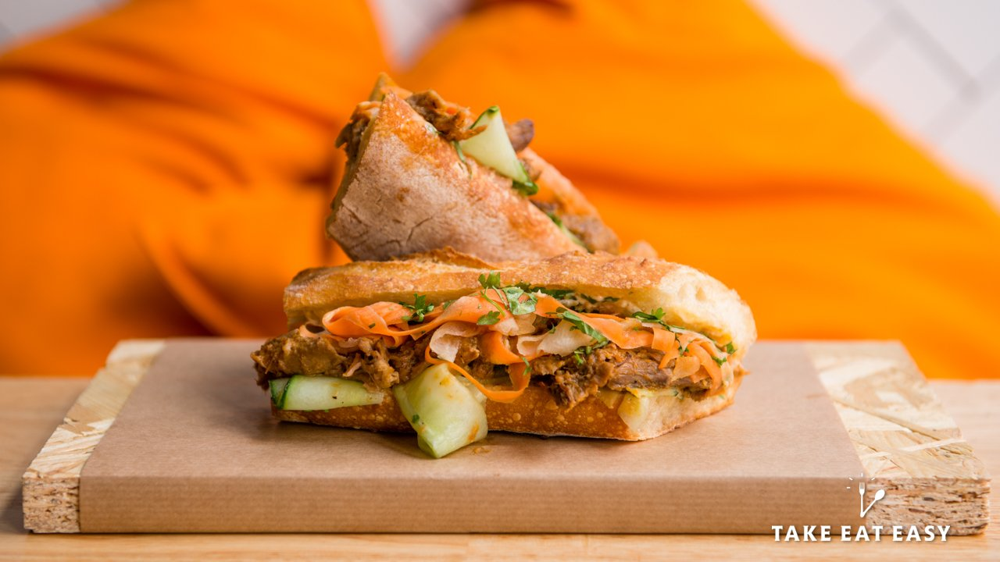
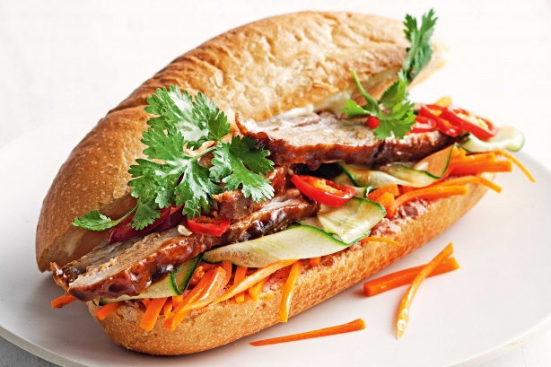
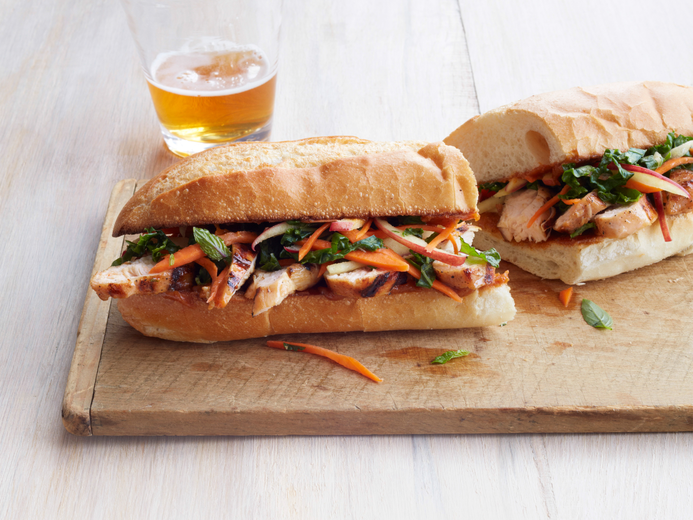

Minh Lam Evangelist @Banh-Minh
The Sandwich That Ate the World
- 
- 
- 
By the early 1900s, Saigon’s grand, tree-lined avenues carried all the hallmarks of a fledgling European city, boasting ostentatious, neo-classical architecture, Parisian-esque cafes, and luxurious restaurants and hotels to serve the expanding population of colonial elites.
Not only did France use its wealth and technology to reaffirm and justify the colonial hierarchy and its assumed superiority over the Vietnamese, food formed another important line between ‘us’ and ‘them’. “Bread and meat make us strong, rice and fish keep them weak,” was a common adage at the time, backed by centuries of absurd pseudo-science which suggested that the rice-centric diets of Southeast Asia made its people somehow predisposed to imperial subjugation. And for a time the colonists stuck to it, rigidly, maintaining a European diet while disapproving of any French who ate Vietnamese food, and any Vietnamese who ate French food.